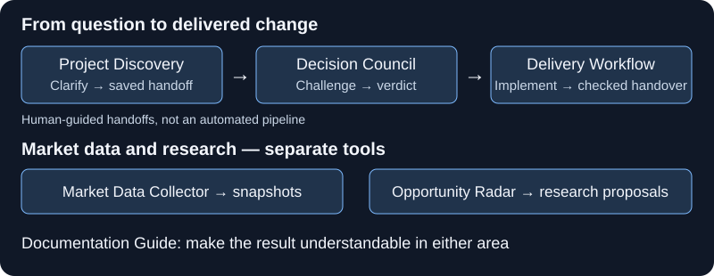

Practical projects by Roland Chotika · developed with AI assistance
AI-assisted work you can inspect, verify, and resume.
Clarify a problem, challenge a decision, or finish a change with evidence you can return to later. Start with one project—not a platform installation.
See a worked before-and-after example
Development work
Discovery: clarify
↓ human handoff
Council: challenge
↓ human handoff
Delivery: implement and verify
Market work — separate tools
Collector: snapshots
Radar: research proposals
Documentation Guide
Explain the result in either area.
From an unclear question to a delivered change
These projects can be used independently. Moving between them is your decision, not an automated pipeline.
Project Discovery
Result: a saved answer or implementation handoff with evidence and open questions.
Use it when missing context could change what you build. A clear, simple request needs only a normal chat.
Explore the workflow · Try itDecision Council
Result: a verdict supported by independent challenges, sources and limitations.
Use it for a consequential choice, not a simple lookup. You review the facts before the independent workers begin.
See a fictional example · Try itDelivery Workflow
Result: an implemented change, recorded checks and a handover you can resume from.
Use it when work spans multiple steps or sessions. Small known edits usually do not need it.
See a hypothetical example · Try itMarket data and research
Separate tools for collecting inputs and researching ideas—not a connected trading system.
Market Data Collector
Result: structured market snapshots and calculated indicators. The offline example uses synthetic data and the real calculation code.
Explore the pipeline · Run the offline exampleOpportunity Radar
Result: a sourced research proposal, then an explicitly accepted watchlist entry or position record. A recommendation does not execute a trade.
Explore the research flow · Try the offline demoMake the result understandable
Documentation Guide turns sources into instructions with prerequisites, actions, expected results and recovery. Its worked example is readable without installing anything.
Read the example · Apply the methodGo deeper
Open the six source-bound walkthroughs
- Project Discovery
- Decision Council
- Delivery Workflow
- Market Data Collector
- Opportunity Radar
- Documentation Guide
Walkthroughs explain a pinned source snapshot, not a recorded live execution. Their shared navigation currently uses German labels. The Python code shown in them is not executed by your browser.